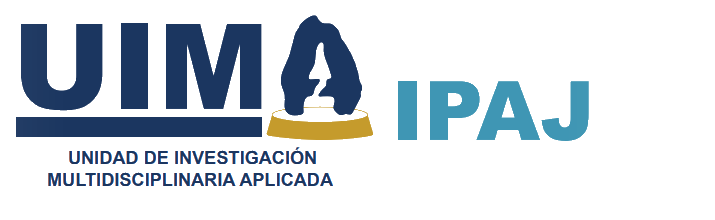

Departamento de Investigación en Procuración y Administración de Justicia.
Dra. Lidia Chávez Fonseca
Jefa del Departamento
- Edificio A de la Unidad de Investigación Multidisciplinaria II, segundo piso.
- 📞 555623-1750, Ext. 38982
- ✉️ cdepjusp@acatlan.unam.mx
🎯 Nuestro Objetivo
- Fomentar y promover grupos de estudio para el desarrollo de proyectos de investigación básica y aplicada que propongan soluciones a los problemas del entorno relacionados con la administración e impartición de justicia en las diversas ramas de las ciencias jurídicas.
📋 Funciones
▼
- Conformar grupos de investigación en las distintas áreas de las ciencias jurídicas.
- Fomentar y promover la actualización y profundización del conocimiento en las distintas ciencias jurídicas.
- Desarrollar proyectos de investigación que tengan impacto en el sistema jurídico en los distintos órdenes de gobierno.
- Realizar estudios en materia de prevención, protección ciudadana y persecución de delitos.
- Impartir capacitación al personal técnico, administrativo y directivo de la Facultad, en el ámbito de la prevención y combate de delitos en la Facultad.
- Coadyuvar en el diseño de sistemas de seguridad para la protección del patrimonio institucional.
- Promover la formación de recursos humanos en Investigación en Procuración y Administración de Justicia en las diversas ramas de las ciencias Jurídicas.
- Desarrollar el programa anual de actividades de Investigación en Procuración y Administración de Justicia.
- Propiciar y supervisar la vinculación con los departamentos de la Coordinación de la Unidad de Investigación Multidisciplinaria Aplicada, para el mejor aprovechamiento de los recursos de las áreas comunes.
- Desarrollar actividades en vinculación con los programas de licenciatura y posgrado.
- Realizar los informes de actividades de acuerdo a los lineamientos y períodos establecidos por la Dirección de la Facultad.
- Las demás que le encomiende la Coordinación de la Unidad de Investigación Multidisciplinaria Aplicada y las inherentes al puesto.
🚀 Proyectos
▼
- Programa de investigación en edición digital y escritura académica (artículos y ensayos)
- Perspectivas contemporáneas del Derecho Constitucional Mexicano.
- La justicia restaurativa como política pública para el mantenimiento de la paz.
- Violencia contra las mujeres: perspectivas y retos.
- Estudio y prevención de Ciberdelitos.
- Violencia de Género en perspectiva comparada.
- Fecha de inicio: 01 de septiembre del 2024
- Fecha de término: 01 de octubre del 2025
- Las comunidades afro mexicanas en el Estado de México.
- Seguridad Universitaria: prevención, acciones y castigos.
- Seminario del Fenómeno Migratorio
- Fecha de inicio: 01 de marzo de 2025
- Fecha de término: 01 de marzo de 2026